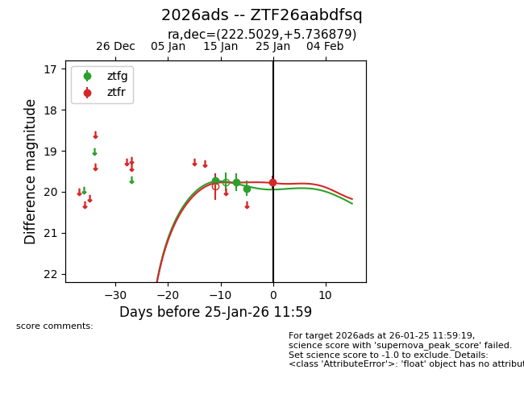
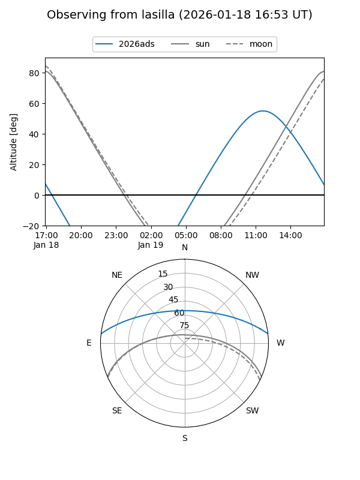
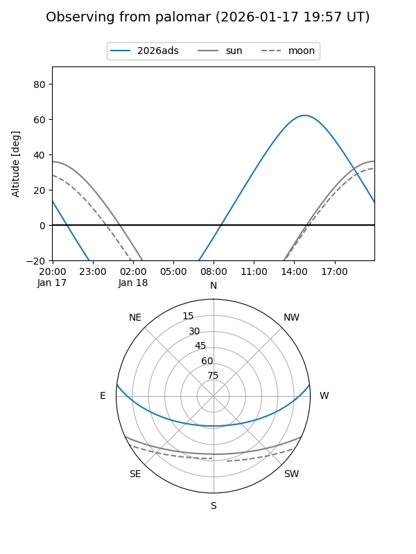
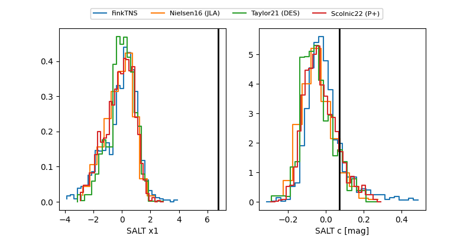

2026ads
Target 2026ads at 2026-01-20 11:21
Aliases and brokers:
FINK: link
Lasair: link
ALeRCE: link
TNS: link
YSE: link
alt names
ZTF26aabdfsq (ztf,fink_ztf)
2026ads (tns,yse)
Coordinates:
equatorial (ra, dec) = 222.5029,+5.73688
equatorial (HMS+DMS) = 14:50:00.69,+05:44:12.76
galactic (l, b) = (1.1128,+54.60842)
Flags:
Photometry:
last ztfg=19.77
2 ztfg detections
Lightcurve

Visibility


Additional plots
